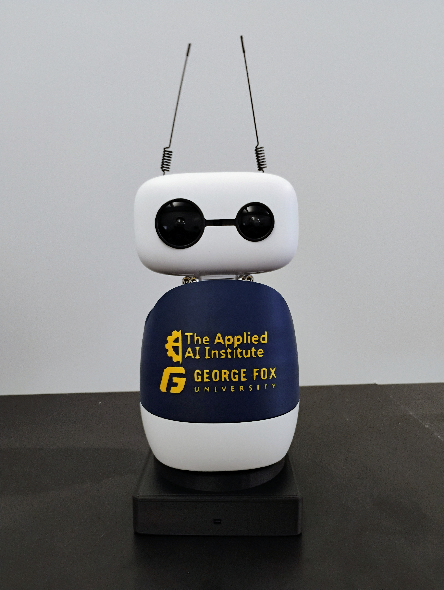
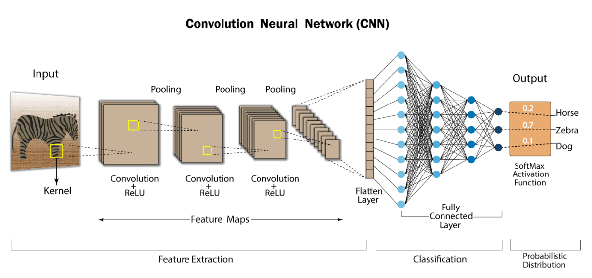

Maggie Campus Concierge Robot
Worked with a team to develop a Campus Concierge Robot, allowing students to ask general queries such as campus directions and weather forecasts. Different deployment locations unlock different functionality such as IT Service Desk Assistant, which allows students, faculty, staff, and visitors to submit support tickets to the IT Help Desk.
- Developed a Fleet Management Dashboard to control and view data from many robots deployed across campus
- Quickly prototyped and developed new functions and applications for Maggie based on user input
- Showcased features to the public to generate excitement for the Institute and GFU
Python • Robotics • RAG • Applied AI • AI Business Solutions • AI-Powered Software Development

VineTech Yield Prediction Rover
Developed an autonomous yield prediction rover using the FarmNG Amiga platform. Integrated GoPro cameras for large-scale image data collection and enabled programmatic control via OpenGoPro on the rover’s Ubuntu-based system. Prioritized reliability, modular design, and field usability.
- Built data collection pipeline using GoPro cameras and onboard compute
- Implemented remote camera control via OpenGoPro API
- Designed for real-world agricultural deployment and reliability
Embedded Systems • Python • Robotics • ROS • OpenGoPro API • Wireless Communication • Machine Learning

Convolutional Neural Network - CIFAR-10
Designed and optimized a Convolutional Neural Network (CNN) to classify images from the CIFAR-10 dataset. Focused on hyperparameter tuning to improve model accuracy and understand performance tradeoffs in deep learning systems.
- Trained CNN on 60,000 labeled images across 10 categories
- Systematically tuned epochs, batch size, learning rate, and kernel size
- Achieved ~77% accuracy with optimized configuration
- Identified optimal parameters: 30 epochs, batch size 32, learning rate 0.001, kernel size 3x3
Python • TensorFlow/Keras • Machine Learning • Computer Vision • Hyperparameter Optimization

Decibel Detector (IoT Noise Monitor)
Developed an IoT-based noise monitoring device to measure and report sound levels in study environments. Implemented real-time data transmission to the cloud for remote monitoring and analysis.
- Built sensor-based system to capture and process decibel levels
- Transmitted data using MQTT protocol to AWS cloud services
- Gained hands-on experience with IoT communication and cloud integration
JavaScript • AWS • MQTT • IoT • Cloud Integration

Off-Grid Calculator
Web application to estimate solar panel and battery requirements based on user-defined energy consumption, helping users plan off-grid power systems.
- Calculated energy needs from appliance usage inputs
- Estimated required solar generation and battery storage capacity
- Designed intuitive UI for accessibility to non-technical users
JavaScript • CSS • HTML • Web Development

Coffee Shop Profit Calculator
Collaborated on a web-based tool to help small coffee shops estimate profit margins and manage inventory. Served as project manager using the SCRUM framework, coordinating development and design.
- Led project planning and task coordination for team development
- Implemented profit estimation based on cost and sales inputs
- Designed features to assist with inventory tracking
JavaScript • HTML • Team Leadership • Project Management